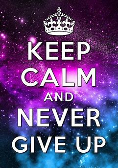

RELAX...
Back
“There is peace even in the storm.”
-Vincent van Gogh
“Keep calm and carry on.”
-Winston Churchill
“The mind is like water, when it’s turbulent, it’s difficult to see. When it’s calm, everything becomes clear.”
-Prasad Mahes
